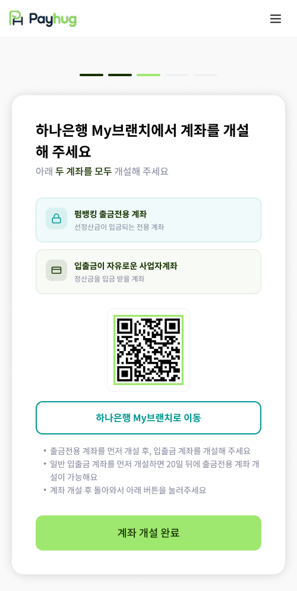

하나은행 My브랜치로 나가서 계좌 두 개를 만들어 옵니다. 계약 전 과정에서 가장 많이 이탈하는 구간입니다.

PC에서는 화면의 QR코드를 스캔, 휴대폰에서는 「하나은행 My브랜치로 이동」 버튼을 누릅니다. 두 계좌를 다 만들고 앱으로 돌아와 「계좌 개설 완료」를 누르면 다음 단계로 넘어갑니다.
"여기가 제일 중요해요. 출금전용 계좌를 먼저 만드시고, 그다음에 일반 입출금 계좌를 만드셔야 합니다. 순서를 바꾸시면 20일을 기다려야 해서 계약이 그 자리에서 멈춥니다."